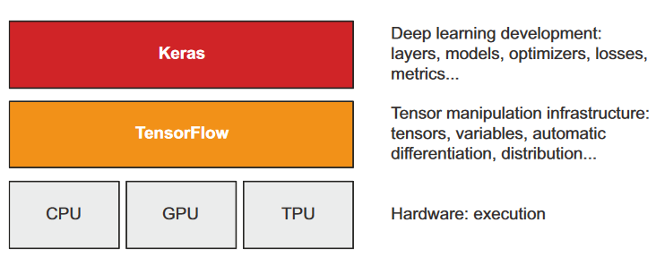
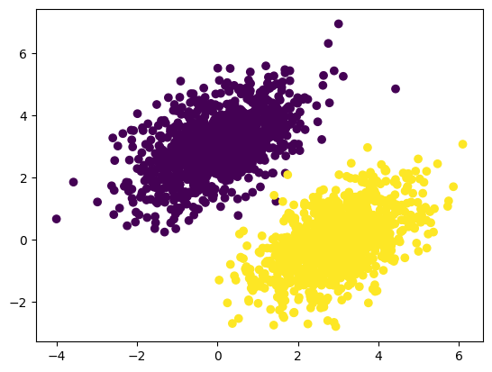
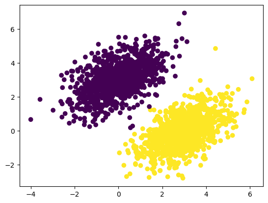

# TODO
- [ ] keras explanation
- [ ] tambahin kata-kata penjelasIntroduction to Keras and TensorFlow
- TensorFlow: Python-based, free, open source machine learning platform developed by Google that enables manipulation of mathematical expressions over numerical tensors, computes gradients automatically, supports CPUs, GPUs, TPUs, allows easy distribution of computation across machines, and can be exported to other runtimes for easy deployment in practical settings.
- Keras: a deep learning API for Python, built on top of TensorFlow, known for its convenient model definition and training, initially developed for research with fast experimentation, and can run on various hardware types, including GPU, TPU, and CPU, and scale to multiple machines seamlessly while prioritizing developer experience.

prerequisites
# !pip install tensorflow # uncomment if you don't have tensorflow installed
import tensorflow as tf
import tensorflow.keras as keras
import numpy as npAll about Tensors and Tensorflow
# All-ones or all-zeros tensors
x = tf.ones(shape = (2,1)) # 2x3 matrix of ones, similar to np.ones((2,1))
print(x)
x = tf.zeros(shape = (2,1)) # 2x3 matrix of zeros, similar to np.zeros((2,1))
print(x)
tf.Tensor(
[[1.]
[1.]], shape=(2, 1), dtype=float32)
tf.Tensor(
[[0.]
[0.]], shape=(2, 1), dtype=float32)x.__class__tensorflow.python.framework.ops.EagerTensor# Random tensors
# create a tensor with random values from a normal distribution
x = tf.random.normal(shape = (2,3), mean = 0, stddev = 1)
print(x)
# create a tensor with random values from a uniform distribution
x = tf.random.uniform(shape = (2,3), minval = 0, maxval = 1)
print(x)tf.Tensor(
[[ 1.1509199 -1.4267175 -0.48263487]
[-0.30107084 0.90581864 1.0413685 ]], shape=(2, 3), dtype=float32)
tf.Tensor(
[[0.6582366 0.34180927 0.91947365]
[0.5607337 0.9532844 0.31796992]], shape=(2, 3), dtype=float32)# numpy array are assignable while tensors are not
x = np.random.normal(loc = 0, scale = 1, size = (2,3))
x[0,0] = 100
print(x)[[ 1.00000000e+02 -1.25304057e+00 -1.18967720e+00]
[ 4.74877369e-01 -8.13430401e-02 -4.57822064e-01]]# numpy array are assignable while tensors are not
x = tf.ones(shape = (2,3))
x[0,0] = 100
print(x)TypeError: 'tensorflow.python.framework.ops.EagerTensor' object does not support item assignment# Creating a TensorFlow variable
v = tf.Variable(initial_value = tf.random.normal(shape = (2,3)))
print(v)
print()
v.assign(tf.zeros(shape = (2,3)))
print(v)<tf.Variable 'Variable:0' shape=(2, 3) dtype=float32, numpy=
array([[-0.10799041, 2.325188 , -0.20042379],
[ 0.48759696, 0.53195345, 0.29525948]], dtype=float32)>
<tf.Variable 'Variable:0' shape=(2, 3) dtype=float32, numpy=
array([[0., 0., 0.],
[0., 0., 0.]], dtype=float32)># Assigning a value to a subset of a TensorFlow variable
v[0,0].assign(100)
print(v)<tf.Variable 'Variable:0' shape=(2, 3) dtype=float32, numpy=
array([[100., 0., 0.],
[ 0., 0., 0.]], dtype=float32)># Assign add
v.assign_add(tf.ones(shape = (2,3)))
print(v)<tf.Variable 'Variable:0' shape=(2, 3) dtype=float32, numpy=
array([[101., 1., 1.],
[ 1., 1., 1.]], dtype=float32)># just like numpy, TensorFlow offers a large collection of tensor operations to express
# mathematical formulas.
a = tf.ones((2, 2))
b = tf.square(a)
c = tf.sqrt(a)
d = b + c
e = tf.matmul(a, b)
e *= d
print(e)tf.Tensor(
[[4. 4.]
[4. 4.]], shape=(2, 2), dtype=float32)So far, TensorFlow seems to look a lot like NumPy. But here’s something NumPy can’t do: retrieve the gradient of any differentiable expression with respect to any of its inputs. Just open a GradientTape scope, apply some computation to one or several input tensors, and retrieve the gradient of the result with respect to the inputs
# Using the GradientTape
input_var = tf.Variable(initial_value = 3.0)
with tf.GradientTape() as tape:
result = tf.square(input_var)
grad = tape.gradient(result, input_var)
print(grad)tf.Tensor(6.0, shape=(), dtype=float32)# Using GradientTape with constant tensor inputs
input_var = tf.constant(3.0)
with tf.GradientTape() as tape:
tape.watch(input_var)
result = tf.square(input_var)
grad = tape.gradient(result, input_var)
print(grad)tf.Tensor(6.0, shape=(), dtype=float32)# Using nested gradient tapes to compute second-order gradients
time = tf.Variable(0.0)
with tf.GradientTape() as outer_tape:
with tf.GradientTape() as inner_tape:
position = 4.9 * time ** 2
speed = inner_tape.gradient(position, time)
acceleration = outer_tape.gradient(speed, time)
print(speed)
print(acceleration)
tf.Tensor(0.0, shape=(), dtype=float32)
tf.Tensor(9.8, shape=(), dtype=float32)An end-to-end example: A linear classifier in pure TensorFlow
# Generating two classes of random points in a 2D plane
num_samples_per_class, num_classes = 1000, 2
negative_samples = np.random.multivariate_normal(mean = [0,3], cov = [[1,0.5],[0.5,1]], size = num_samples_per_class)
positive_samples = np.random.multivariate_normal(mean = [3,0], cov = [[1,0.5],[0.5,1]], size = num_samples_per_class)
inputs = np.vstack((negative_samples, positive_samples)).astype(np.float32)
targets = np.vstack((np.zeros((num_samples_per_class, 1), dtype = 'float32'), np.ones((num_samples_per_class, 1), dtype = 'float32')))import matplotlib.pyplot as plt
plt.scatter(inputs[:, 0], inputs[:, 1], c=targets[:, 0])
plt.show()
# Creating the linear classifier variables
input_dim = 2
output_dim = 1
W = tf.Variable(tf.random.normal(shape = (input_dim, output_dim)))
b = tf.Variable(tf.random.normal(shape = (output_dim,)))
# the forward pass
def model(inputs):
return tf.sigmoid(tf.matmul(inputs, W) + b)
# The mean squared error loss function
def entropy_loss(targets, predictions):
per_sample_losses = - targets * tf.math.log(predictions) - (1 - targets) * tf.math.log(1 - predictions)
return tf.reduce_mean(per_sample_losses)
# training step
learning_rate = 0.1
def training_step(inputs, targets):
with tf.GradientTape() as tape:
predictions = model(inputs)
loss = square_loss(targets, predictions)
grad_loss_wrt_W, grad_loss_wrt_b = tape.gradient(loss, [W, b])
W.assign_sub(learning_rate * grad_loss_wrt_W)
b.assign_sub(learning_rate * grad_loss_wrt_b)
return loss
# training loop/process/epoch
for step in range(100):
loss = training_step(inputs, targets)
print(f"Loss at step {step}: {loss:.4f}")Loss at step 0: 0.0495
Loss at step 1: 0.0473
Loss at step 2: 0.0454
Loss at step 3: 0.0436
Loss at step 4: 0.0420
Loss at step 5: 0.0406
Loss at step 6: 0.0392
Loss at step 7: 0.0380
Loss at step 8: 0.0369
Loss at step 9: 0.0358
Loss at step 10: 0.0348
Loss at step 11: 0.0339
Loss at step 12: 0.0330
Loss at step 13: 0.0322
Loss at step 14: 0.0315
Loss at step 15: 0.0308
Loss at step 16: 0.0301
Loss at step 17: 0.0295
Loss at step 18: 0.0289
Loss at step 19: 0.0283
Loss at step 20: 0.0278
Loss at step 21: 0.0273
Loss at step 22: 0.0268
Loss at step 23: 0.0263
Loss at step 24: 0.0259
Loss at step 25: 0.0255
Loss at step 26: 0.0251
Loss at step 27: 0.0247
Loss at step 28: 0.0243
Loss at step 29: 0.0240
Loss at step 30: 0.0236
Loss at step 31: 0.0233
Loss at step 32: 0.0230
Loss at step 33: 0.0227
Loss at step 34: 0.0224
Loss at step 35: 0.0221
Loss at step 36: 0.0218
Loss at step 37: 0.0215
Loss at step 38: 0.0213
Loss at step 39: 0.0210
Loss at step 40: 0.0208
Loss at step 41: 0.0205
Loss at step 42: 0.0203
Loss at step 43: 0.0201
Loss at step 44: 0.0198
Loss at step 45: 0.0196
Loss at step 46: 0.0194
Loss at step 47: 0.0192
Loss at step 48: 0.0190
Loss at step 49: 0.0188
Loss at step 50: 0.0186
Loss at step 51: 0.0185
Loss at step 52: 0.0183
Loss at step 53: 0.0181
Loss at step 54: 0.0179
Loss at step 55: 0.0178
Loss at step 56: 0.0176
Loss at step 57: 0.0174
Loss at step 58: 0.0173
Loss at step 59: 0.0171
Loss at step 60: 0.0170
Loss at step 61: 0.0168
Loss at step 62: 0.0167
Loss at step 63: 0.0166
Loss at step 64: 0.0164
Loss at step 65: 0.0163
Loss at step 66: 0.0162
Loss at step 67: 0.0160
Loss at step 68: 0.0159
Loss at step 69: 0.0158
Loss at step 70: 0.0157
Loss at step 71: 0.0155
Loss at step 72: 0.0154
Loss at step 73: 0.0153
Loss at step 74: 0.0152
Loss at step 75: 0.0151
Loss at step 76: 0.0150
Loss at step 77: 0.0149
Loss at step 78: 0.0148
Loss at step 79: 0.0147
Loss at step 80: 0.0146
Loss at step 81: 0.0145
Loss at step 82: 0.0144
Loss at step 83: 0.0143
Loss at step 84: 0.0142
Loss at step 85: 0.0141
Loss at step 86: 0.0140
Loss at step 87: 0.0139
Loss at step 88: 0.0138
Loss at step 89: 0.0137
Loss at step 90: 0.0136
Loss at step 91: 0.0135
Loss at step 92: 0.0135
Loss at step 93: 0.0134
Loss at step 94: 0.0133
Loss at step 95: 0.0132
Loss at step 96: 0.0131
Loss at step 97: 0.0131
Loss at step 98: 0.0130
Loss at step 99: 0.0129predictions = model(inputs)
print(predictions)
plt.scatter(inputs[:, 0], inputs[:, 1], c=predictions[:, 0] > 0.5)
plt.show()tf.Tensor(
[[0.04117302]
[0.02456259]
[0.00931301]
...
[0.9823857 ]
[0.9144001 ]
[0.98359877]], shape=(2000, 1), dtype=float32)